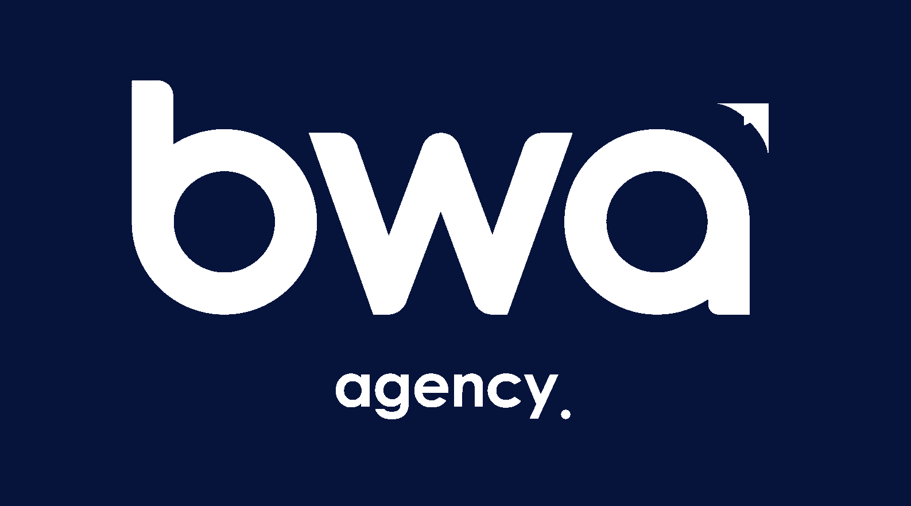

Pour ce second stage j'ai été à l'agence
BWA à Dijon
Mon but était de réaliser un module sur Wordpress permettant de créer facilement et rapidement des pages
d’un site d’une certaine région, département ou commune,
pour avoir un meilleur référencement sur le web.
J’ai également du refaire la page d’accueil d’un site client, ainsi que son header et footer, avec
l’aide de l’outils Elementor sur Wordpress.
Les différent projets

Le but de ce module était de créer automatiquement des pages en fonction des régions, départements et communes sélectionnées. Dans le but d’avoir un meilleur référencement. Les langages utilisés sont l’html, php, js, json et css.

Au début, un alternant m’a aidé, il a réalisé la gestion du clique sur les checkbox, ainsi que la création des branches en fonction d’un tableau qu’on lui envoi.
 Création d’onglet du menu du module, pour l’affichage de toutes les pages qui ont été créés (Régions,
Départements, Communes)
Création d’onglet du menu du module, pour l’affichage de toutes les pages qui ont été créés (Régions,
Départements, Communes)
 J’ai également rajouté des fenêtres de confirmation, pour éviter de supprimer les pages par inadvertance
J’ai également rajouté des fenêtres de confirmation, pour éviter de supprimer les pages par inadvertance
 Pour la liste des pages j’ai ajouté une barre de recherche
Pour la liste des pages j’ai ajouté une barre de recherche
 Avec également la possibilité de supprimer une page, de faire une modification rapide, de supprimer
plusieurs pages d’un coup.
Avec également la possibilité de supprimer une page, de faire une modification rapide, de supprimer
plusieurs pages d’un coup.
 Avec la modification rapide, il est possible de modifier le titre, slug, date, l'auteur et l'état de la page.
Avec la modification rapide, il est possible de modifier le titre, slug, date, l'auteur et l'état de la page.
 Création de l’onglet “Corbeille”, restaurer ou supprimer, permettant de définitivement les pages qui sont
dans la corbeille.
Création de l’onglet “Corbeille”, restaurer ou supprimer, permettant de définitivement les pages qui sont
dans la corbeille.
 Ajout d’une barre de navigation pour limiter le nombre de pages affichées à 50 pages / page.
Ajout d’une barre de navigation pour limiter le nombre de pages affichées à 50 pages / page.